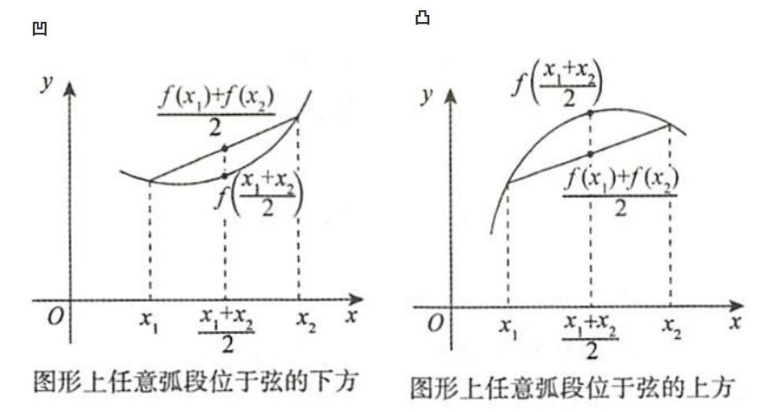
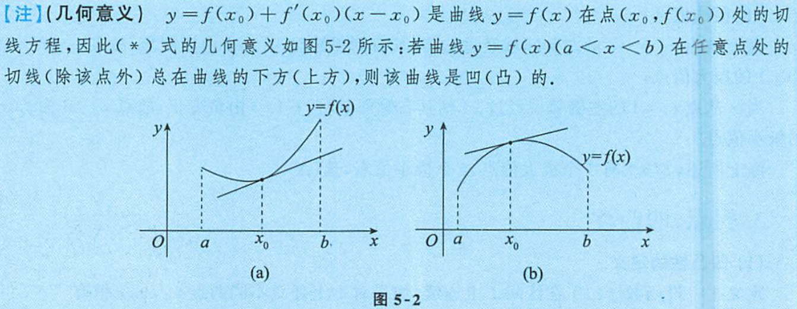

函数性态
1 性质
1.1 单调性
y=f(x),[a,b]连续,(a,b)可导
(a,b)内,f′(x)≥(≤)0,等号在有限点成立⇒f(x)在[a,b]单调增(减)
1.2 凹凸性
定义
f(x)在I连续,对∀x1,x2,f(x)在I是凹(凸)的⟺f(2x1+x2)<2f(x1)+f(x2)(>)
这个定义就是称曲线在割线下方为凹，反之为凸，刻画曲线选点既可以选中点也可以选任意点
⟺λ1,λ2∈(0,1),λ1+λ2=1
f(λ1x1+λ2x2)<λ1f(x1)+λ2f(x2)(>)

判别条件
满足可导条件,f的凹(凸)⟺f′的单调增(减)
f(x)在I上2阶可导,∀x∈I,f′′(x)≥0(≤0)⇒凹(凸),等号在有限点成立
直观上f′>0,x↗,f↗的情形,若f′′>0,曲线加速上凹,若f′′<0,曲线减速下凸
![]()
等价定义

1.3 奇偶周期性
1.3.1
导函数值变化规律看曲线切线变化规律，变上限积分函数值变化规律看曲线面积变化规律:
导函数保持原函数奇偶性,周期性
1.3.2
∫0xf(t)dt保持函数奇偶性∵∫axf(t)dt=∫a0f(t)dt+∫0xf(t)dt∴∫axf(t)dt保持偶函数,不保持奇函数(脱离原点)
1.3.3
f周期为T⇒∫aa+Tf(x)=∫0Tf(x)F(x)=∫axf(t)dt,F(x+T)=∫ax+Tf(t)dt=∫axf(t)dt+∫xx+Tf(t)dt=F(x)+∫0Tf(t)dt∫0xf(t)dt周期为T⟺∫0Tf(t)dt=0
2 分界点
2.1 极值点
1
f(x)的极大(小)值点x0:∃x0邻域,对∀邻域内点x,f(x0)≥(≤)f(x)
2
驻点:可导函数导数为0的点
⇒
极值点x=x0处若可导,f′(x0)=0
极值点是改变单调性的临界状态,故可导时为导数正负号的变化点0
⇐
1
f(x)在x=x0连续,在x0去心邻域可导
x∈(x0−δ,x0),f′(x)≥(≤)0,x∈(x0,x0+δ),f′(x)≤(≥)0⇒f(x)在x=x0取极大(小)值
1.5
f′(x0)=0,f′在x0邻域连续,f′在x0左右邻域均单调减(增),由1得f(x)在x=x0取极大(小)值
2
f(x)在x=x0,二阶可导,f′(x0)=0,f′′(x0)=0,f′′(x0)<(>)0⇒f(x)在x=x0取极大(小)值
不妨设f′′(x0)<0,f′′(x0)=x→x0limx−x0f′(x)−f′(x0)<0∃邻域,x<x0,f′(x)>f′(x0)=0,x>x0,f′(x)<f′(x0)=0由1得f取极大值,同理f′′(x0)>0,f取极小值
2.5
f′(x0)=0,f′的导函数极限x→x0limf′′(x)=A<(>)0⇒f′′(x0)=A<(>)0⇒f(x)在x=x0取极大(小)值
换个角度,f′的导函数极限x→x0limf′′(x)=A<(>)0⇒∃去心邻域对∀x∈左右邻域,f′′(x)<(>)0⇒f′在x0左右邻域均单调减(增)f′可导⇒f′连续,由1.5f(x)在x=x0取极大(小)值
3
n为偶数,f(x)在x=x0,n阶可导,f′(x0)=...=fn−1(x0)=0,fn(x0)=0
fn(x0)<(>)0⇒f(x)在x=x0取极大(小)值
2.2 二元函数极值点
⇒
多元函数极值点的各偏导数为0
★⇐
z=f(x,y)邻域上二阶偏导数连续,fx′(x,y)=0,fy′(x,y)=0A=fxx′′(x,y),B=fxy′′(x,y),C=fyy′′(x,y),Δ=AC−B2
⎩⎨⎧z=f(x,y)不取极值不确定,改用定义法z=f(x,y)取极值,{A<0取极大值A>0取极小值Δ<0Δ=0Δ>0
2.3 拐点
定义
拐点:连续曲线的凹弧与凸弧的分界点在满足可导要求的情况下,f的拐点⟺f′的极值点
研究x=x0在f的拐点性质或判别f的拐点→研究x=x0在f′的极值点性质或判别f′的极值点,判别f拐点时不用区分f′极大/小值
推论
f在x=x0可导,若x=x0是f的拐点,x=x0是f′的极值点若x=x0是f的极值点⇒f′(x0)=0,则f′在x=x0邻域不变号,与x=x0是f的拐点矛盾⇒可导点不同时为极值点和拐点
3 多项式
3.1
判断多项式函数某点性态时，考虑到根据方程根易插出多项式增减趋势而不易看出凹凸趋势
不妨直接画图判断多项式极值，先求导后画图寻找导函数极值判断多项式凹凸性
3.2
n次多项式p(x)有n个不同零点,p(k)(x)有n−k个不同零点
由罗尔定理,∀p(x)零点之间∃p′(ξ)=0,p′(x)至少n−1个零点,∵n−1次多项式p′(x)至多n−1个零点∴p′(x)n−1个零点,继续递推,p(k)(x)有n−k个不同零点
4 最值
4.1
驻点，不可导点，端点(极限)比较大小
例子
求f(x)=exsinx，x≥0最值
最值点必为驻点xk=4π+kπ,f(xk)={2ex1,k偶2ex−1,k奇,显然x0取最大值,x1取最小值
★4.2 条件最值
u=f(x,y,z)在条件{φ(x,y,z)=0ψ(x,y,z)=0下的最值F(x,y,z,λ,μ)=f(x,y,z)+λφ(x,y,z)+μψ(x,y,z)
⎩⎨⎧Fx′=fx′+λφx′+μψx′=0Fy′=0Fz′=0Fλ′=φ=0Fμ′=ψ=0轮换对称化简变量
根据实际问题存在最值,方程组解得点中函数值最大的为最大值,函数值最小的为最小值
4.2 区域最值
存在性
有界闭区域上的多元连续函数⇒∃最值
求法
- 求出所有各偏导为0或不存在的点
- 用拉格朗日乘数法或代入法求出边界可疑点
- 所有点中函数值最大的为最大值, 函数值最小的为最小值